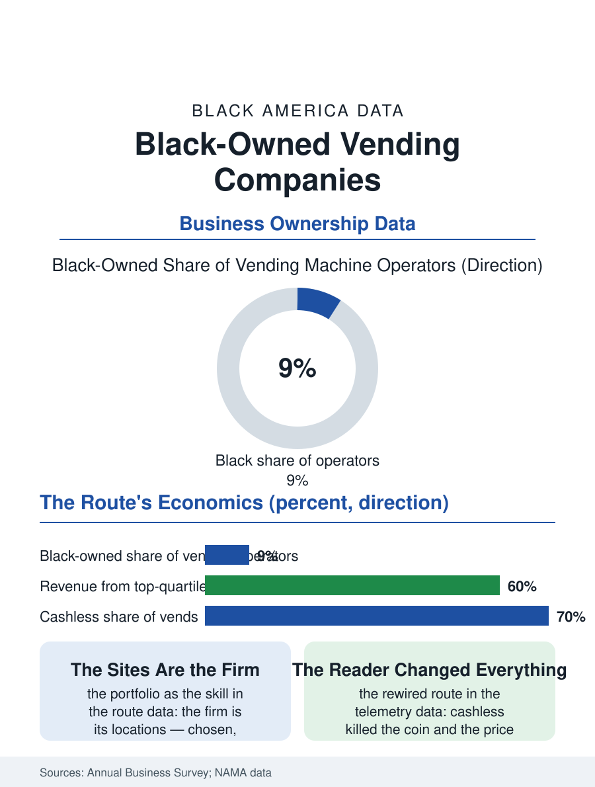

Black Business
Coins Into a Company: Black-Owned Vending Firms
One machine in a garage to a regional route portfolio, the economy's most anonymous proprietor. The vending file.

The vending company is the retail economy's smallest unit multiplied: one operator, a route of machines in the break rooms and the laundromats and the school corridors, a business built coin by coin into, at its top, regional firms of real scale. Black operators hold a visible tier of the trade. The business census counts the vending operators in the thousands. This article reads the vending file.
The Route as the Firm
The model's atom is the location: the machine placed in the workplace or the institution on the location's permission, serviced on the route's rhythm, its take split between the product's cost, the location's commission where one is paid, and the operator's margin, so that the firm's skill is the portfolio, the sites chosen and kept, as much as the machine's mechanics. The entry is the business section's most graduated: the first machine in the founder's garage, bought used, placed in the cousin's shop, growing by the route's accretion into the warehouse and the second truck in the pattern of the courier's and the rental's files, with the financing running on the machines' own collateral in the equipment lenders' specialty. The product's politics are the file's local color: the machine's stock is a small referendum held daily, the neighborhood's tastes read in the sold-out rows, and the operator who stocks the community's preferences, the drinks and the snacks the national planogram undervalues, holds the location against the national operator's bid in the pattern of every rooted file. The breakage and the spoilage are the route's quiet taxes in the trade data, the expired sandwich and the jammed coil priced into the margin, and the route software's newest service, the dynamic visit that sends the driver only to the machines the telemetry says are empty or ailing, is converting the fixed route into the responsive one, a change whose labor arithmetic, fewer stops at fuller machines, the operators are still learning to price against the location's expectation of the familiar face.
Cashless, Healthy, and the Micro Market
The payment transition rewired the route's economics in a decade: the card reader and the phone's tap killed the coin's constraint and the price point's quarter ceiling together, raising the average vend and the data's granularity, the operator now reading the route's performance by the hour from the dashboard the telemetry supplies, a professionalization whose capital cost is the small operator's current gate. The healthy vending file is the policy's: the schools' and the hospitals' standards for the machine's contents, written by the nutrition files' advocates, converted a share of the route's stock by regulation, with the operators' associations negotiating the standards' timelines as the trade's representatives. The micro market, the unattended store of shelves and a kiosk that is replacing the bank of machines in the larger workplaces, is the file's format frontier, its higher basket and its shrink priced against the machine's security in the operator's current capital decisions.
Coins Into a Company
The vending file closes on the route's civic invisibility, because the operator is the economy's most anonymous proprietor, known to the locations as the man who fills the machine, his firm's scale invisible behind the route's dispersion, so that the trade's substantial Black firms, some of them supplying the institutions of whole regions, conduct a commerce the community consumes daily without ever seeing its name, a condition the file exists to correct in the record. The succession file follows the route's salability, the portfolio of locations being the asset the buyers price, its transfer the route man's retirement in the pattern of the other route files. The census counts the operators in the thousands. The file's last entry is the break room at the shift's middle, the machine's light the room's hearth, stocked that morning by the operator whose name is on the service sticker's small print, the economy's smallest retailer and, on the route's total, not small at all. The school corridor's machine carries the file's tenderest stock decision, the operator reading the students' tastes against the standards' rules in the same planogram, a negotiation renewed at every restock. The route's total, in the end, is counted in other people's breaks made bearable.
More in Black Business
Black-Owned Businesses: Counts, Receipts, and the Representation Gap
About 161,000 Black-owned employer firms and three million solo ventures: how the Census Bureau counts Black business ownership, where firms concentrate, and the gap between population share and business share.
Black Median Net Worth: The Wealth Gap in Federal Reserve Data
The Federal Reserve puts Black median family net worth at $44,900, against $285,000 for White families — about 16 cents on the dollar. The widest gap in economic data.
Black Buying Power: The $1.8 Trillion Consumer Economy
Black buying power is estimated at about $1.8 trillion — larger than the economy of most nations. What the figure measures, who produces it, and what it buys.
Source: U.S. Census Bureau, Annual Business Survey for vending machine operators; National Automatic Merchandising Association data.